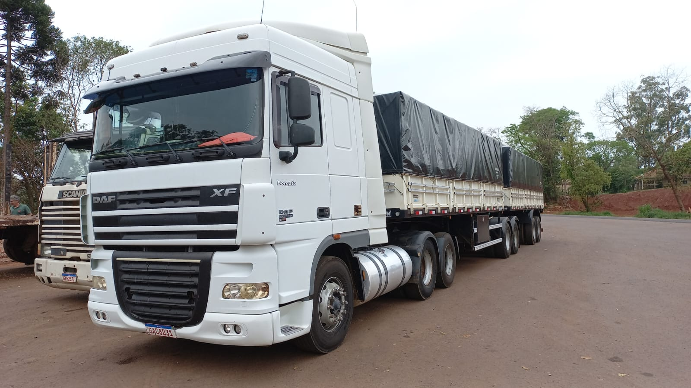
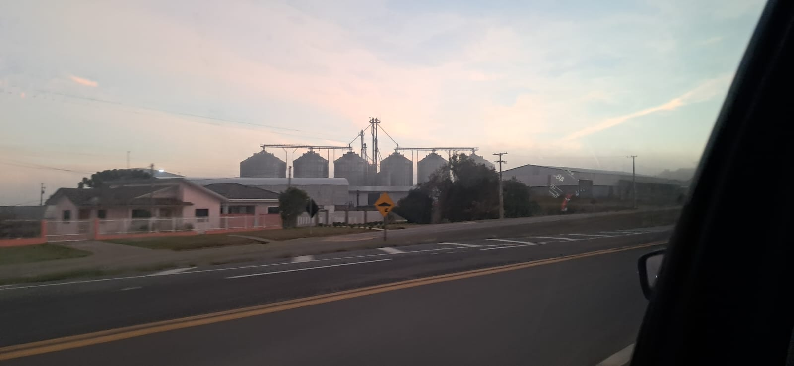
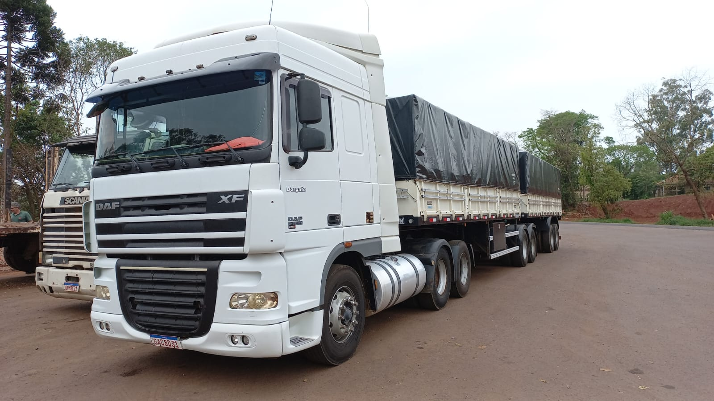
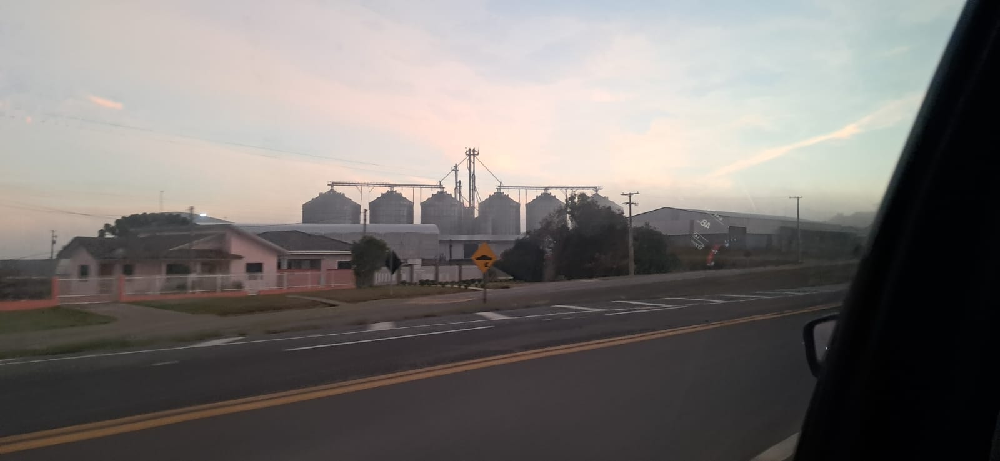

INTRODUÇÃO
A agronomia desempenha um papel fundamental na economia, impulsionando diversas indústrias de destaque. Entre elas, a produção de malte se sobressai tanto no cenário nacional quanto internacional,sendo uma das áreas do agronegócio que mais movimenta o mercado e gera oportunidades. Além disso, a qualidade do malte influencia diretamente a experiencia do consumidor final,seja na produção de cervejas artesanais ou em outros produtos derivados, reforçando a importancia dessa indústria no dia a dia das pessoas.
Historia: A Cadeia Produtiva do Malte
No brasil o malte é em sua maioria produzido na parte sul devido a condiçoes climaticas favoraveis, com a produção vinda da sua maior empresa a Agraria a maior maltaria da america latina mantendo 30% da demanda de malte no brasil conta com sua produção de 360.000t de malte anualmente. A Agrária é uma cooperativa agroindustrial localizada em Guarapuava (PR), com sede no distrito de Entre Rios. Estabelecida em 1951 por imigrantes alemães, alia história a tecnologia de ponta para produção de malte e gestão de excelência.
Quiz: Você conhece a jornada do malte?
Obrigado por participar! 🚜🌾 saiba mais
Galeria
 



Contato
Aluno Responsável: Ezequiel Assis de Paula
Email: paula.ezequiel@escola.pr.gov.br